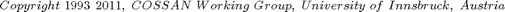
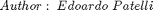
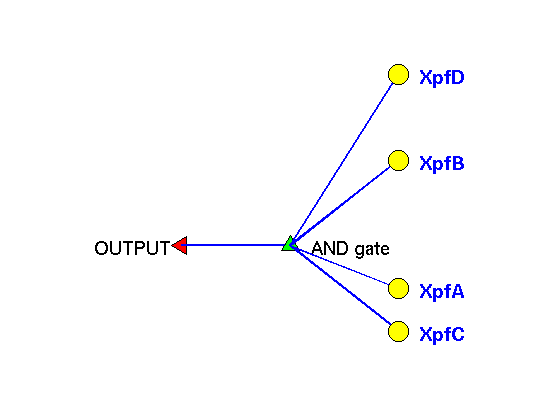

Tutorial for ParallelSystemReliabilityAnalysis
This tutotial shows how to use the SystemReliability object in COSSAN-X in order to estimate the failure probability of a parellel system. This tutorial is based on the example #5 (pag.271) from the paper: "A benchmark study on importance sampling techniques in structural reliability" S.Engelung and R. Rackwitz. Structural Safety, 12 (1993)
See Also: http://mechanik.uibk.ac.at/wiki/index.php/Parallel_System
 
Contents
- Definition of the Inputs
- Definition of the Model
- Definition of the SystemReliability Model
- Definition of Mio objects
- Use the SystemReliability object
- Find desing Point of the parallel system
- Compute the failure probability for each event
- Compute the failure probability for the cutset 1-2-3-4 (i.e. the parallel system)
- Compute the failure probability using an high performance importance sampling procedure
- Close figures
Definition of the Inputs
In this section the basic objects required to define a SystemReliability object are defined.
A SystemReliability object contains at least two Performance functions. In this tutorial the performance functions (i.e. limit state functions) are based on Matlab script (MIO) objects. There are 5 random variables (standard normal) and 4 limit state functions.
% Definition of the RandomVariable RV1=RandomVariable('Sdistribution','normal','mean',0,'std',1); RV2=RandomVariable('Sdistribution','normal','mean',0,'std',1); RV3=RandomVariable('Sdistribution','normal','mean',0,'std',1); RV4=RandomVariable('Sdistribution','normal','mean',0,'std',1); RV5=RandomVariable('Sdistribution','normal','mean',0,'std',1); % Definition of the Parameters Par1=Parameter('value',2.677); Par2=Parameter('value',2.500); Par3=Parameter('value',2.323); Par4=Parameter('value',2.225); % Definition of the uncorrelated Set of random variables Xrvs = RandomVariableSet('CXrv',{RV1 RV2 RV3 RV4 RV5},'CSmembers',{'RV1' 'RV2' 'RV3' 'RV4' 'RV5'}); % Define Input Object Xin = Input('CXmembers',{Xrvs Par1 Par2 Par3 Par4},'CSmembers',{'Xrvs' 'Par1' 'Par2' 'Par3' 'Par4' });
Definition of the Model
In this example the physical model is composed by an empty Evaluator. This mean that there is nothing to be computed in advance before evaluate the performance functions.
% The evaluator is empty since there is nothing to be evaluated. Xev= Evaluator; % Define the Models Xmdl= Model('Xevaluator',Xev,'Xinput',Xin);
Definition of the SystemReliability Model
The first step to construct a SystemRealibility model is to define the performance functions. Then it is necessary to define a FaultTree object that contains the logic (dependecies) of the limit state functions. Please refer to the Tutorial of FaultTree for more details
Definition of Mio objects
The mio object contains the performance fucntion
XmA=Mio('Sdescription', 'Performance function', ... 'Sscript','Moutput=Minput(:,1)-Minput(:,2)-Minput(:,3);', ... 'Liostructure',false, ... 'Lfunction',false, ... 'Liomatrix',true, ... 'Coutputnames',{'outA'},... 'Cinputnames',{'Par1' 'RV1' 'RV2'}); XmB=Mio('Sdescription', 'Performance function', ... 'Sscript','Moutput=Minput(:,1)-Minput(:,2)-Minput(:,3);', ... 'Liostructure',false, ... 'Lfunction',false, ... 'Liomatrix',true, ... 'Coutputnames',{'outB'},... 'Cinputnames',{'Par2' 'RV2' 'RV3'}); XmC=Mio('Sdescription', 'Performance function', ... 'Sscript','Moutput=Minput(:,1)-Minput(:,2)-Minput(:,3);', ... 'Liostructure',false, ... 'Lfunction',false, ... 'Liomatrix',true, ... 'Coutputnames',{'outC'},... 'Cinputnames',{'Par3' 'RV3' 'RV4'}); XmD=Mio('Sdescription', 'Performance function', ... 'Sscript','Moutput=Minput(:,1)-Minput(:,2)-Minput(:,3);', ... 'Liostructure',false, ... 'Lfunction',false, ... 'Liomatrix',true, ... 'Coutputnames',{'outD'},... 'Cinputnames',{'Par4' 'RV4' 'RV5'}); % Define Performance Functions XpfA=PerformanceFunction('Xmio',XmA); XpfB=PerformanceFunction('Xmio',XmB); XpfC=PerformanceFunction('Xmio',XmC); XpfD=PerformanceFunction('Xmio',XmD); % Fault Tree object. CnodeTypes={'Output','AND','Input','Input','Input','Input'}; CnodeNames={'TopEvent','AND gate','XpfA','XpfB','XpfC','XpfD'}; % Be carefull with the name of the basic events. They should correspond to % the name of the performance function. VnodeConnections=[0 1 2 2 2 2]; % Construct a FaultTree object Xft=FaultTree('CnodeTypes',CnodeTypes,'CnodeNames',CnodeNames,... 'VnodeConnections',VnodeConnections, ... 'Sdescription','FaultTree Tutorial of SystemReliability'); % Summary of the FaultTree display(Xft) % Display the FaultTree f1=Xft.plotTree; % Identify the minimal cut-sets Xft=Xft.findMinimalCutSets; display(Xft) % Now we can construct a SystemReliability object composed by the % PerformanceFunction objects, a Model and the FaultTree Xsys=SystemReliability('Cmembers',{'XpfA' 'XpfB' 'XpfC' 'XpfD'},... 'CXperformanceFunctions',{XpfA XpfB XpfC XpfD}, ... 'Xmodel',Xmdl,'XFaultTree',Xft); % show the System Reliability object display(Xsys)
=================================================================== FaultTree Object - Name: Xft Description: FaultTree Tutorial of SystemReliability =================================================================== The FaultTree contains 6 nodes Node #1 (TopEvent) Node Type: Output Connection: 0 Node #2 (AND gate) Node Type: AND Connection: 1 Node #3 (XpfA) Node Type: Input Connection: 2 Node #4 (XpfB) Node Type: Input Connection: 2 Node #5 (XpfC) Node Type: Input Connection: 2 Node #6 (XpfD) Node Type: Input Connection: 2 ------------------------------------------------------------------- Cut-Set of the Fault Tree not identified ------------------------------------------------------------------- Processing Leaf #2 Processing Leaf #3 4 5 6 =================================================================== FaultTree Object - Name: Xft Description: FaultTree Tutorial of SystemReliability =================================================================== The FaultTree contains 6 nodes Node #1 (TopEvent) Node Type: Output Connection: 0 Node #2 (AND gate) Node Type: AND Connection: 1 Node #3 (XpfA) Node Type: Input Connection: 2 Node #4 (XpfB) Node Type: Input Connection: 2 Node #5 (XpfC) Node Type: Input Connection: 2 Node #6 (XpfD) Node Type: Input Connection: 2 ------------------------------------------------------------------- 1 cut-sets identified Minimal Cut-Set #1: XpfA XpfB XpfC XpfD ------------------------------------------------------------------- =================================================================== SystemReliability Object - Description: =================================================================== * FaultTree object defined * 4 basic events defined ** #1: XpfA ** #2: XpfB ** #3: XpfC ** #4: XpfD
Use the SystemReliability object
The SystemReliability object is used here to estimate the failure probability associated to the cutset adopting the Monte Carlo simulation.
Xmc=MonteCarlo('Nsamples',5e5,'Nbatches',10); XpfReference=Xsys.pf('Xsimulation',Xmc); % Show summary of the results display(XpfReference) % Now we can estimate the failure probability of the System considering % separately the contribute of each limit state function % % First at all we use cossan to estimate the design point for each % performance fucntion and we store the results indide the object % SystemReliability. This is done automatically invoking the method % designPointIdentification of the class SystemReliability Xsys=Xsys.designPointIdentification; display(Xsys);
[Simulation:exportResults] Writing partial results (SimulationData_batch_1_of_10) on the folder: /home/ep/workspace/COSSAN-X_SVN/COSSANXengine/examples/Tutorials/ParallelSystem/20110607T091802 [Simulation:exportResults] Writing partial results (SimulationData_batch_2_of_10) on the folder: /home/ep/workspace/COSSAN-X_SVN/COSSANXengine/examples/Tutorials/ParallelSystem/20110607T091802 [Simulation:exportResults] Writing partial results (SimulationData_batch_3_of_10) on the folder: /home/ep/workspace/COSSAN-X_SVN/COSSANXengine/examples/Tutorials/ParallelSystem/20110607T091802 [Simulation:exportResults] Writing partial results (SimulationData_batch_4_of_10) on the folder: /home/ep/workspace/COSSAN-X_SVN/COSSANXengine/examples/Tutorials/ParallelSystem/20110607T091802 [Simulation:exportResults] Writing partial results (SimulationData_batch_5_of_10) on the folder: /home/ep/workspace/COSSAN-X_SVN/COSSANXengine/examples/Tutorials/ParallelSystem/20110607T091802 [Simulation:exportResults] Writing partial results (SimulationData_batch_6_of_10) on the folder: /home/ep/workspace/COSSAN-X_SVN/COSSANXengine/examples/Tutorials/ParallelSystem/20110607T091802 [Simulation:exportResults] Writing partial results (SimulationData_batch_7_of_10) on the folder: /home/ep/workspace/COSSAN-X_SVN/COSSANXengine/examples/Tutorials/ParallelSystem/20110607T091802 [Simulation:exportResults] Writing partial results (SimulationData_batch_8_of_10) on the folder: /home/ep/workspace/COSSAN-X_SVN/COSSANXengine/examples/Tutorials/ParallelSystem/20110607T091802 [Simulation:exportResults] Writing partial results (SimulationData_batch_9_of_10) on the folder: /home/ep/workspace/COSSAN-X_SVN/COSSANXengine/examples/Tutorials/ParallelSystem/20110607T091802 [Simulation:exportResults] Writing partial results (SimulationData_batch_10_of_10) on the folder: /home/ep/workspace/COSSAN-X_SVN/COSSANXengine/examples/Tutorials/ParallelSystem/20110607T091802 Maximum no. of samples reached. Samples computed 500000; Maximum allowed samples: 500000 =================================================================== FailureProbability Object - Description: =================================================================== * Results obtained with MonteCarlo method ** First Moment *** Pfhat = 2.140e-04 *** Std = 2.069e-05 *** CoV = 9.666e-02 ** Second Moment *** variance = 1.871e-09 ** Simulation details *** Nsamples = 5.000e+05 *** Nbatches = 10 *** Exit Flag = Identify Design Point for the Performance Function XpfA * 2 Convergence factor 2.110153e-12 Design point identified Identify Design Point for the Performance Function XpfB * 2 Convergence factor 2.110330e-12 Design point identified Identify Design Point for the Performance Function XpfC * 2 Convergence factor 2.110129e-12 Design point identified Identify Design Point for the Performance Function XpfD * 2 Convergence factor 2.110204e-12 Design point identified Design point of each Performance Function identified =================================================================== SystemReliability Object - Description: =================================================================== * FaultTree object defined * 4 basic events defined ** #1: XpfA | Reliablity index = 1.893e+00 ** #2: XpfB | Reliablity index = 1.768e+00 ** #3: XpfC | Reliablity index = 1.643e+00 ** #4: XpfD | Reliablity index = 1.573e+00
Find desing Point of the parallel system
Find designPoint using linear hypothesis It is not necessary to specify the cut-set since is already defined in the FaultTree included in the SystemReliability object
[~, XdpIntersection] = Xsys.findLinearIntersection('tolerance',1e-2); % display(XdpIntersection) % It is important to notice that although the single limit state function are % linear and very simple the failure probability of the system component can not % in general, be estimated with approximate method such as FORM/SORM. % In fact, the associated failure probability of the parellel system based on % the FORM method is: display(sprintf('Failure Probability based on the FORM : %10.3e',XdpIntersection.form)) % that is really far away from the reference solution display(sprintf('Failure Probability of the reference : %10.3e',XpfReference.pfhat))
=================================================================== DesignPoint Object - Description: =================================================================== * Coordinates of the Design Point ** standard normal space: 1.126e+00 1.551e+00 9.488e-01 1.374e+00 8.508e-01 ** in physical space : 1.126e+00 1.551e+00 9.488e-01 1.374e+00 8.508e-01 * Unit Vector pointing in the direction of the Design Point ** standard normal space: 1.126e+00 1.551e+00 9.488e-01 1.374e+00 8.508e-01 ** in physical space : 4.200e-01 5.787e-01 3.539e-01 5.126e-01 3.174e-01 * Euclidean norm of the Design Point 2.681e+00 Failure Probability based on the FORM : 3.673e-03 Failure Probability of the reference : 2.140e-04
Compute the failure probability for each event
It is possible to compute the failure probability of each individual event defined in the SystemRealibility object using
Xmc=MonteCarlo('Nsamples',1e4); Xsys=Xsys.pfComponents(Xmc); % The system reliability object contains now also the FailureProbability object % associated to each component. Hence, 4 Failure probability object are present display(Xsys) % For instance the failure probability of the first limit state function is: display(Xsys.XfailureProbability(1))
[Simulation:exportResults] Writing partial results (SimulationData_batch_1_of_1) on the folder: /home/ep/workspace/COSSAN-X_SVN/COSSANXengine/examples/Tutorials/ParallelSystem/20110607T091953 Maximum no. of samples reached. Samples computed 10000; Maximum allowed samples: 10000 [Simulation:exportResults] Writing partial results (SimulationData_batch_1_of_1) on the folder: /home/ep/workspace/COSSAN-X_SVN/COSSANXengine/examples/Tutorials/ParallelSystem/20110607T091955 Maximum no. of samples reached. Samples computed 10000; Maximum allowed samples: 10000 [Simulation:exportResults] Writing partial results (SimulationData_batch_1_of_1) on the folder: /home/ep/workspace/COSSAN-X_SVN/COSSANXengine/examples/Tutorials/ParallelSystem/20110607T091957 Maximum no. of samples reached. Samples computed 10000; Maximum allowed samples: 10000 [Simulation:exportResults] Writing partial results (SimulationData_batch_1_of_1) on the folder: /home/ep/workspace/COSSAN-X_SVN/COSSANXengine/examples/Tutorials/ParallelSystem/20110607T091959 Maximum no. of samples reached. Samples computed 10000; Maximum allowed samples: 10000 =================================================================== SystemReliability Object - Description: =================================================================== * FaultTree object defined * 4 basic events defined ** #1: XpfA | pfhat= 2.900e-02 | Reliablity index = 1.893e+00 ** #2: XpfB | pfhat= 3.810e-02 | Reliablity index = 1.768e+00 ** #3: XpfC | pfhat= 5.050e-02 | Reliablity index = 1.643e+00 ** #4: XpfD | pfhat= 6.260e-02 | Reliablity index = 1.573e+00 =================================================================== FailureProbability Object - Description: =================================================================== * Results obtained with MonteCarlo method ** First Moment *** Pfhat = 2.900e-02 *** Std = 1.678e-03 *** CoV = 5.787e-02 ** Second Moment *** variance = 2.816e-02 ** Simulation details *** Nsamples = 1.000e+04 *** Nbatches = 1 *** Exit Flag = Maximum no. of samples reached. Samples computed 10000; Maximum allowed samples: 10000
Compute the failure probability for the cutset 1-2-3-4 (i.e. the parallel system)
In this section the failure probability associate to the cutset 1-2-3-4 is computed using different sampling strategies
% It is possible to obtain the failure probability of an arbitrary cut set using % the method getCutset of the SystemReliability object. % PLEASE NOTE that the computed failure probability is computed using the % hypothesis of INDEPENDENT EVENTS: Xcs12=Xsys.getCutset('Vcutsetindex',[1 2]); Xcs134=Xsys.getCutset('Vcutsetindex',[1 3 4]); Xcs1234=Xsys.getCutset('Vcutsetindex',[1 2 3 4]); % This values is really far away from the estimated failure probability for the % parallel system display(sprintf('Failure Probability Cut set 1-2 : %10.3e',Xcs12.failureProbability)) display(sprintf('Failure Probability Cut set 1-3-4 : %10.3e',Xcs134.failureProbability)) display(sprintf('Failure Probability Cut set 1-2-3-4 : %10.3e',Xcs1234.failureProbability)) display(sprintf('Failure Probability of the reference : %10.3e',XpfReference.pfhat)) % The method compute bounds of the cutset allows to estimate the first order % approximation. Xcs1234.computeBounds % The second order bounds requires the estimation of the cross failure % probability (i.e. the failure probability associated to the combination of 2 % limit state function) % In order to estimate the failure probability of a cut set without the % hypothesis of independent events it is necessary to used some simulation % methods.
Failure Probability Cut set 1-2 : 1.105e-03 Failure Probability Cut set 1-3-4 : 9.168e-05 Failure Probability Cut set 1-2-3-4 : 3.493e-06 Failure Probability of the reference : 2.140e-04 =================================================================== CutSet Object - Description: Cutset extracted from the SystemReliability object =================================================================== * DesignPoint: not defined * FailureProability : not defined * Lower bound: 0.000e+00 * Upper bound: 2.900e-02 * Failure Probability : 3.493e-06 * Kappa value : 5.590e-01
Compute the failure probability using an high performance importance sampling procedure
See for more information the tutorial TutorialSystemReliability
XpfSystemHPIS=Xsys.HPIS;
%
display(XpfSystemHPIS)
=================================================================== FailureProbability Object - Description: =================================================================== * Results obtained with ImportanceSampling method ** First Moment *** Pfhat = 1.443e-05 *** Std = 3.259e-06 *** CoV = 2.259e-01 ** Second Moment *** variance = NaN ** Simulation details *** Nsamples = 1.000e+02 *** Nbatches = 1 *** Exit Flag =
Close figures
close(f1)